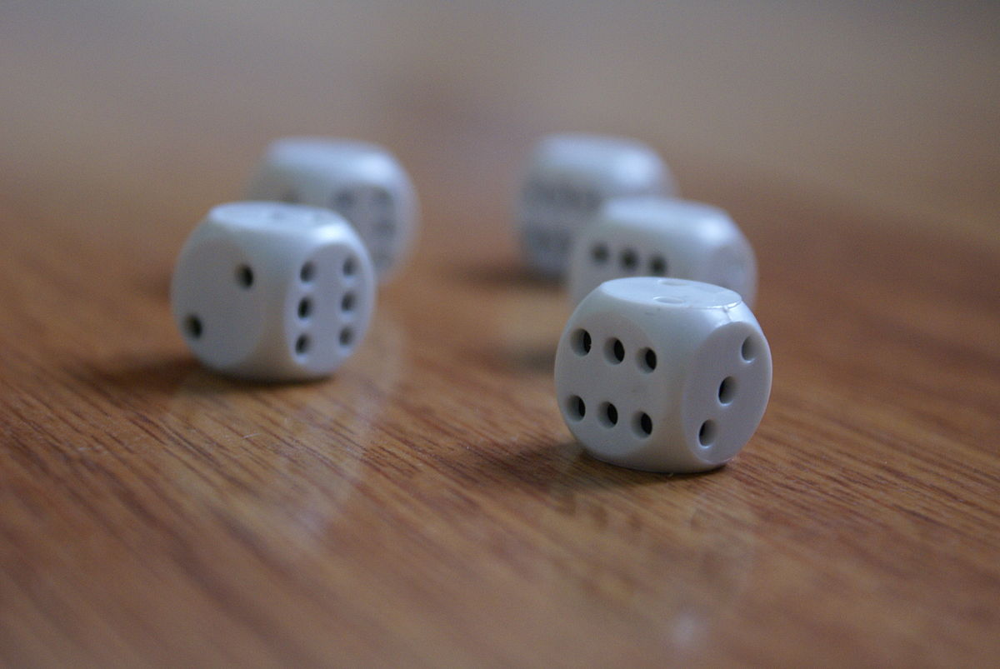
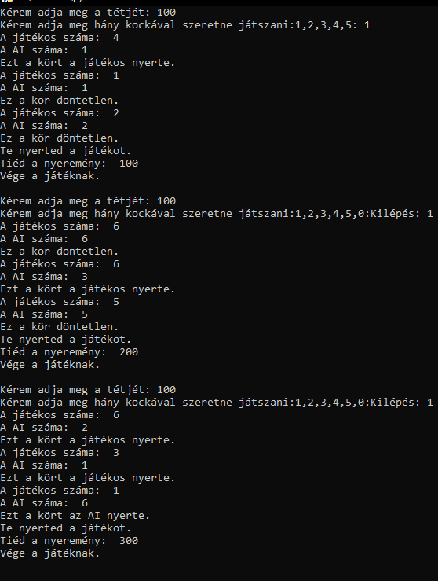

Kockajáték

A megadott kód egy egyszerű kockajátékot valósít meg Pythonban. A játékos beírja, hogy mennyi pénzzel szeretne játszani, majd megadja, hogy hány kockával szeretne játszani. A játékban a játékos és az AI kockát dob, és a nyertes körök száma kerül nyilvántartásra. Ha a játékos nyer több kört, mint az AI, akkor nyeri a játékot, és a tétjének megfelelő összeg jár neki. Ha az AI nyer több kört, akkor a játékos veszít, és a tétjének megfelelő összeg veszít. A játék végén a játékos kérheti, hogy játsszon újra, vagy kiléphet a játékból.